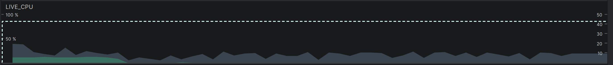
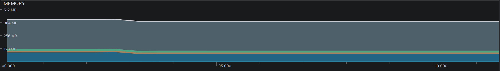
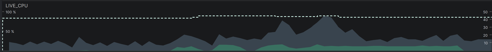
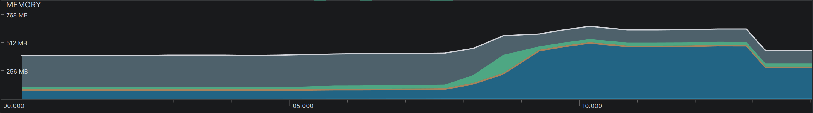
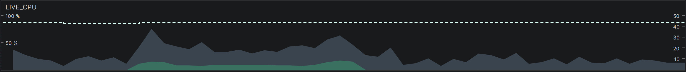
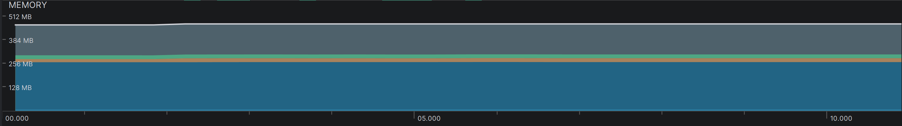
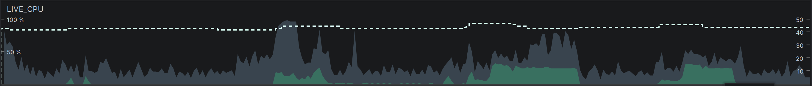
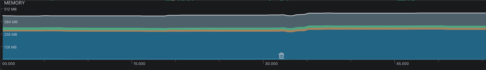
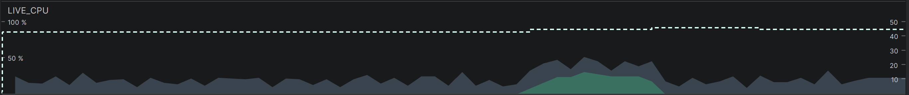
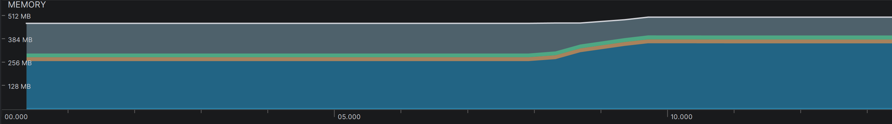

Live Telemetry process performance analysis across 5 recorded device states
Test Device: OPPO A12 | SoC: MediaTek Octa-Core | RAM: 3 GB
| State | Avg CPU (%) | Peak CPU (%) | Peak RAM | Native RAM | Main Observation |
|---|---|---|---|---|---|
| Idle | 2.81% | 13.29% | 419.2 MB | 89.66 MB | Baseline |
| Model Changing | 7.06% | 17.95% | 666.3 MB | 493.0 MB | Biggest RAM Event |
| Connection | 4.19% | 18.95% | 472.4 MB | 255.7 MB | Moderate Overhead |
| STT | 6.88% | 33.33% | 472.2 MB | 295.5 MB | Highest CPU Peak |
| TTS | 3.81% | 31.85% | 506.4 MB | 352.3 MB | Native RAM Heavy |
The application is fully loaded and sitting in the background with no active operations. CPU remains at a healthy baseline while memory stabilizes.


Language and model switching phase. Represents the single largest memory surge in the entire dataset, triggered by native allocation spikes.


Network socket and connection initialization phase. Displays modest CPU utilization and stable RAM allocation.


Active acoustic processing state. Exhibits the highest sustained CPU utilization peak across all tests, while maintaining a controlled RAM footprint.


Audio synthesis state via native Piper engine. Demonstrates a bursty CPU pattern coupled with higher native memory usage.

